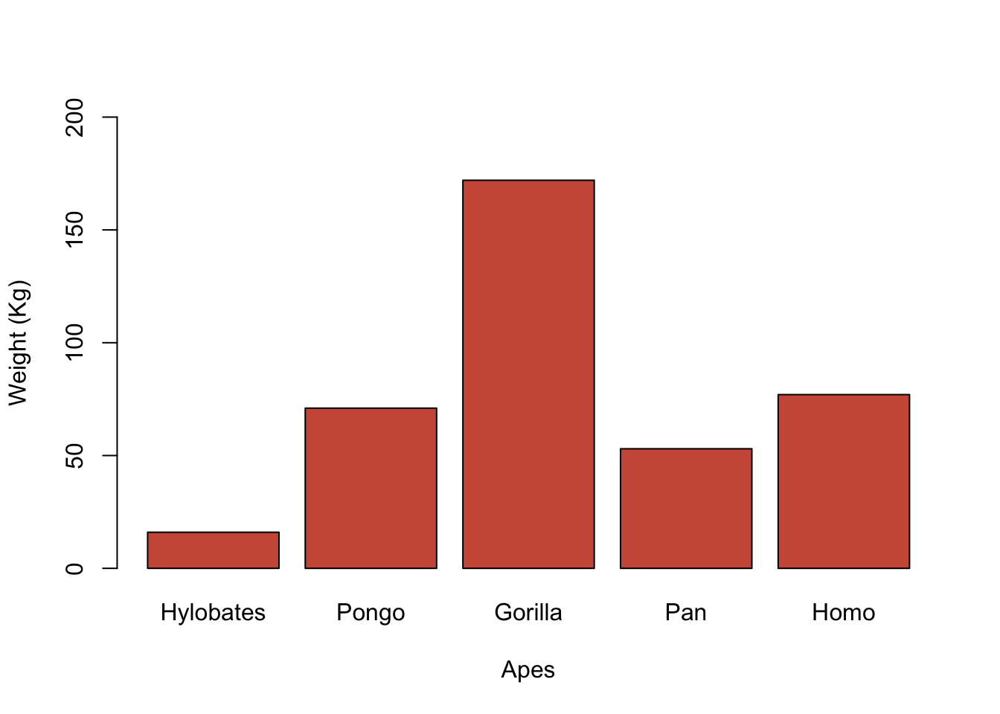

2.4 R objects and functions
There are different kinds of entities that we identify as objects. Here, we will distinguish between R objects of different data structures (e.g., matrices, vectors, data frames, lists) and "recursive" objects such as those of mode function (Lander, 2017; Venables et al., 2009). We will refer to the latter as functions and to the former as R objects. In sum, we will use functions (e.g., mean(), boxplot()) to execute commands on R objects (e.g., atomic vectors, data frames, matrices).
2.4.1 Functions
Let's imagine that we would like to command a robot to do something for us. We simply need to learn the robot's language (i.e., rules of grammar, syntax, vocabulary, code), so it can decode our commands and execute our orders. Any programming language will work in a similar way. For instance, we will need to read data from files (e.g., text file, CSV file, SPSS file) or to simulate our own data. These data should be appropriately stored and saved into R's global environment to be able to manipulate and organize our data (e.g., merge, subset, select, rename), to model and visualize the data, and to publish the results. To complete those tasks, we must use appropriate functions on data structures of the same mode.
2.4.1.1 The c() function
The c() function is usually referred as the concatenate or combine function. It combines two or more elements of the same mode (e.g., numerical values, character strings, logical values) to create vectors.
c(16, 71, 172, 53, 77)
## [1] 16 71 172 53 77
c('Hylobates', 'Pongo', 'Gorilla', 'Pan', 'Homo')
## [1] "Hylobates" "Pongo" "Gorilla" "Pan" "Homo"
c(FALSE, TRUE, TRUE, TRUE, TRUE)
## [1] FALSE TRUE TRUE TRUE TRUE2.4.2 R objects
R objects such as character strings and numeric vectors, data frames, matrices or lists are saved and stored in R's global environment when we assign them to a name using the assignment operator (name \(\gets\) data). The console shows the object only if it is recalled. To produce the assignment operator in Windows/Linux operating systems press Alt + -. Alternatively, press Option + - if using MacOS.
As a computing programming language, R executes our commands to produce certain outcomes. Sometimes those outcomes will appear on the console (e.g., estimating the arithmetic mean on a numerical vector). Other times, however, these commands won't produce effects on the console. For example, when we create a vector, it will only appear in the global environment tab unless it will be recalled in the same line of code preceded by a semicolon (;) or plaxed on a line of code below.
weight <- c(16, 71, 172, 53, 77); weight
## [1] 16 71 172 53 77
apes <- c('Hylobates', 'Pongo', 'Gorilla', 'Pan', 'Homo')
apes
## [1] "Hylobates" "Pongo" "Gorilla" "Pan" "Homo"If we don't assign a set of values to any given name to create an R object, these values won't be saved into the global environment. Therefore, we won't be able to recall the object for future computations.
c(16, 71, 172, 53, 77)
## [1] 16 71 172 53 77Instead of creating an R object first, we could be tempted to paste a vector into a function. This approach is not efficient---specially with large data structures---and it should be avoided. Given the outstanding possibilities that R offers, we should create R objects and use functions on them to model and visualize the data.
mean(c(16, 71, 172, 53, 77))
## [1] 77.8
weight.apes <- c(16, 71, 172, 53, 77)
mean(weight.apes)
## [1] 77.8
mean(weight.apes, trim = .20)
## [1] 67
median(weight.apes)
## [1] 71
sd(weight.apes)
## [1] 57.78148
length(weight.apes)
## [1] 5
barplot(weight.apes, ylab = 'Weight (Kg)', xlab = 'Apes',
col = 'coral3', ylim = c(0, 200),
names.arg = c('Hylobates', 'Pongo', 'Gorilla', 'Pan', 'Homo'))
Naming objects
- R is case sensitive (e.g., the R object weight differs from Weight)
- Do not start with a number or special characters (e.g., +, -, &, *, ?)
- Using lower (e.g., weight.apes, x, m2spr34) rather than an upper case letters (e.g., Weight.Apes, X, M2spr34) facilitates the programming flow
-
Do not use names of functions to name R objects (e.g.,
data(),mean(),plot(),factor()) - When using several words, do not leave spaces. Alternatively, use the full stop, underscore, or a combination of UPPER and lower case letters (e.g., g.spatial.males, g_fluid_females, gCrystallized)
- Use short, but informative names (e.g., g.spatial.m, g_fluid_f, gCrystal)
2.4.3 Applying functions to objects
Functions work on data stored in R objects and saved in the global environment. We will place the name of the R object within the parentheses of functions, executing the command of the function on R objects. Below, we will compute the arithmetic mean (M = 52.1) and estimate the length (N = 10) of one numeric vector named age.
age <- c(37, 19, 74, 62, 51, 56, 58, 76, 45, 43)
mean(age)
## [1] 52.1
length(age)
## [1] 10Functions usually include arguments that allow us to modify their default settings. For example, the function mean() computes the arithmetic mean on the R object placed within parentheses. In the previous example, some outliers (e.g., 19, 76) might be distorting the estimation of the age distribution's central tendency. Luckily, the argument trim can be set from 0 (no trimming) to 0.5 (maximum trimming) to compute robust estimators of central tendency. By trimming 20% of the observations from each tail of the distribution (trim = .20), we will compute 20% trimmed means---a robust estimator of central tendency (Wilcox, 2016). The maximum trimming (trim = .50) computes the median as it only considers the central value of the distribution.
mean(age, trim = 0)
## [1] 52.1
mean(age, trim = .20)
## [1] 52.5
mean(age, trim = .50)
## [1] 53.5
median(age)
## [1] 53.52.4.4 Getting help
All R functions are included in packages that are created and maintained by their authors (e.g., statisticians, psychologists, biologists, sociologists). R packages are freely available on the Internet at the Comprehensive R Archive Network or CRAN. Every package has its own documentation that describes and explains how to use the functions of each package. We can also access to cheat sheets, on-line learning tools, forums and on-line communities, blogs, or even open-access books created in R using bookdown (Xie, 2017; Xie, Allaire, & Grolemund, 2019).
RStudio includes the documentation of functions and packages in the Help tab. For example, if we search for the function mean(), we will find the documentation for this function included in R's package base. Another way to access to the documentation of packages and functions when help is required is to use the function help() or the question mark (?) followed by the name of the function.
help(mean)
?mean